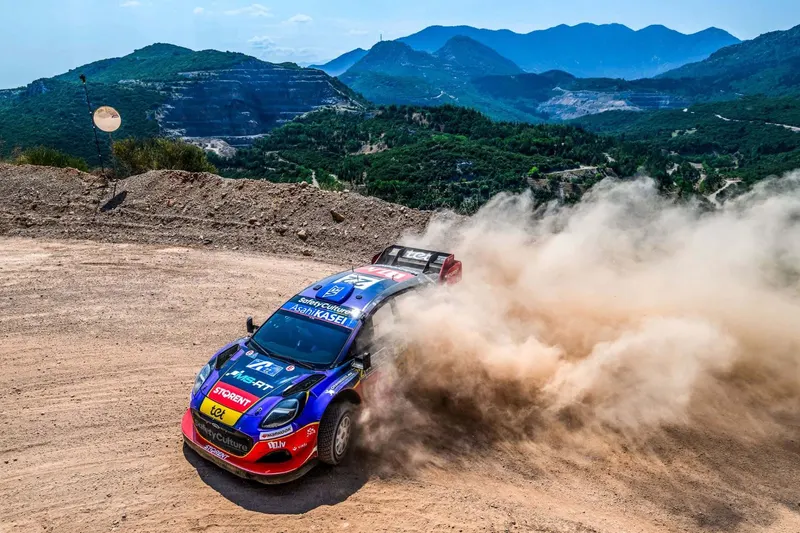
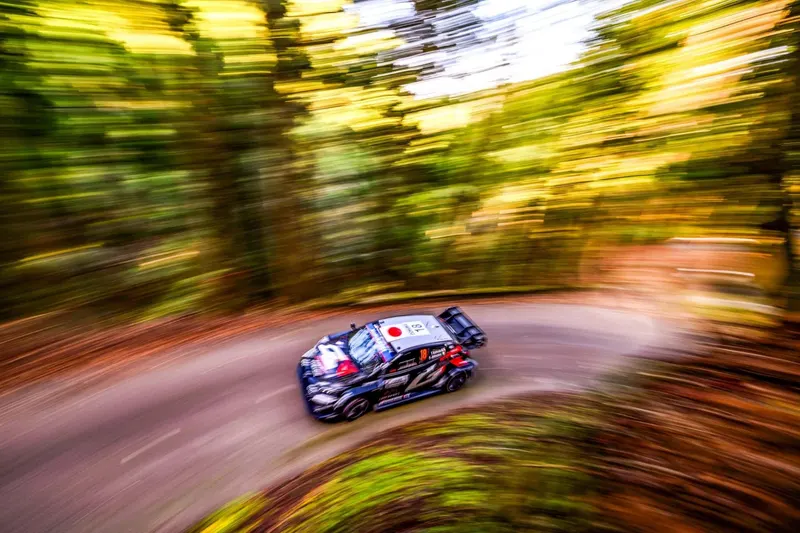

Ford Returns to the WRC as a Manufacturer
For the first time since 2012, there will be a works Ford team in the World Rally Championship. The company has confirmed a factory return for the 2028 WRC season, with M-Sport set to run the programme, in a car adhearing to the WRC27 regulations in 2029.


Latest Stories

Rally Finland 2026: The Stages
Rally Finland celebrates its 75th edition with an itinerary that features significant changes compared to last year. Iconic stages like Ruuhimäki, Myhinpää and Ouninpohja are absent from the rally, with Himos returning as the only stage on Sunday.…

Rally Estonia 2026 - The Stages
Rally Estonia features a shorter format, with the rally proper starting on Friday afternoon. The organisers have still managed to exceed the 300 competitive kilometer mark, with mostly identical stages to last year.

How often does the fastest driver actually win in the WRC?
How often does the fastest driver in a rally actually win in the end? It's a simple question, but it's quite tricky when you think about it. Is the winner always the fastest in a rally? How has this changed through the years? In other words, who…

Acropolis Rally 2026: Route Preview
Τhe Acropolis Rally returns to the Peloponnese for its 70th running, with the rally's base being in Loutraki. Most of the rally's route is new, with only one stage remaining unchanged compared to 2025. The event organisers will make use of a ferry…

The Biggest Gaps in Pace Between Team-Mates in the WRC
In rallying, teams do not always field evenly matched driver lineups. Sometimes its because they wanted to give a chance to a younger driver, other times it's because said driver brought in a lot of money, or he was just a last resort signing. Today…

Rally Japan 2026 - Route Preview
Rally Japan plays host to the last tarmac rally of the 2026 WRC Season and the Rally1 era, featuring twisty and technical stages in the region of Aichi. This year's route has seen some minor changes compared to the previous edition.
Stats Centre
See all ›
2025: The WRC Season in Numbers
With the 2025 season reaching its conclusion, we take a deep dive to look at how each driver and team performed across the year. The Powerslide Stats Season Review is back and it's nerdier than ever!

A Look Back at the 2025 ERC Season
The European Rally Championship season drew to a close in Croatia this past weekend, with Miko Marczyk emerging victorious.

The R5 Class: The Story So Far
We take a deep dive in all R5/Rally2 cars, and how they've performed in international competitions since 2013, as well seeing who the representative GOATs are!

Powerslide Stats Centre: The Story of the 2017 WRC Season
The 2017 WRC Season was the start of a new era for the sport. New and exciting cars gave us a modern classic. Let's take a deep dive to see how it unfolded, using stats and more.
WRC History
See all ›
Every 2026 WRC driver's biggest crash
Every rally driver has had a big crash in their career. In this post, we will be taking a look at the biggest smash of every driver in the top class from the 2026 WRC season. Let's have a look!

Col de Turini; a Monte Carlo Legend
The Col de Turini is a stage that lives in infamy among rally fans. Over the decades, 106 passes of the stage have been held, with 51 different drivers managing to win this legendary stage. But why is Col de Turini so famous? What drivers have…

When the WRC visited Circuits
The WRC will visit the Monaco Circuit for the first time since 2008. To mark this occasion, let's have a look at other times the World Rally Championship visited well known motorsport venues!

Mitsubishi and Abu Dhabi's Forgotten WRC Effort
Long before Rally Saudi Arabia, long before Rally Jordan and the Qatar and Abu Dhabi World Rally Teams, there was an effort for an Abu Dhabi backed team to join the WRC in 2007, using Mitsubishi Lancer Evo WRC cars.
Acropolis Rally
See all ›
Acropolis Rally back in Loutraki; What can we expect for 2026?
The 70th EKO Acropolis Rally will be based in Loutraki. Moving the rally 's HQ to the Peloponnese was a move of necessity, as the Lamia Expo would not be available for 2026. So let's take a look at what might be on the 2026 itinerary, as well as…

Reacting to the 2025 Acropolis Rally Route
The itinerary for the 2025 Acropolis Rally has been revealed. The event returns to its usual summer slot for this year, and sees some changes to its route. Eleftherohori is absent from the event for the first time since 2015, Karoutes returns after…

Ranking all the Acropolis Rally stages since 2021 - Part 2
Rally Acropolis has used 21 individual stages since it's return in 2021. But how do these stages rank in Dimitris' eyes?

Reacting to the 2024 Acropolis Rally route
The itinerary for this year's Acropolis Rally has been revealed, and there are some surprises in it! The rally has abandoned it's usual format from the past 3 years, and the organisers have instead opted for a different one! Some notable omissions…
Route History of the Acropolis
See all ›


Concept Itineraries
See all ›
How would Rally Finland look if it used Remote Services?
Dimitris' failed attempt at a Rally Finland concept!

What could an ERC rally based in Ioannina look like?
Greece recently re-entered the international stage with its own tarmac rally. Would a rally like this one be enticing for the ERC promoter?

Could this be how Rally Croatia will look like in the future? - Adriatic Rally Concept
After the end of this year's Rally Croatia, rumors started to emerge that the event organisers are exploring the idea of moving the event to someplace else in the future. The rumored locations include Dubrovnik, a location that has never hosted a…

What could an international rally look like in the Baltics?
With the Central European Rally coming up this week, Estonia being axed from the 2024 calendar and Rally Latvia being on the calendar confirmed, got me thinking. What if both Estonia and Latvia could get spots in the calendar by combining forces for…
Στα Ελληνικά
See all ›
Ράλλυ Ακρόπολις 2025 Preview - Οι Ειδικές του Αγώνα
To Ράλλυ Ακρόπολις είναι το τελευταίο σε σειρά από τρία σκληρά χωμάτινα ράλλυ. Είναι η πρώτη φορά που ο εθνικός μας αγώνας διεξάγεται το καλοκαίρι από τότε που επέστρεψε στο καλεντάρι του WRC το 2021. 'Iσως στην τελευταία έκδοση του ράλλυ με…

Ράλλυ Ακρόπολις 2024 - Ανάλυση των Ειδικών
Το 68ο Ράλλυ Ακρόπολις είναι προ των πυλών, και η διαδρομή του είναι διαφορετική σε σχέση με τα προηγούμενα έτη.

Ώρα για επιστροφή της Qualifying Stage ?
O Thierry Neuville δεν ήταν φαν του Ράλλυ της Λετονίας, και επανέφερε το debate για την επιστροφή της Κατατακτήριας ειδικής στο προσκήνιο.

Ανάλυση της διαδρομής του Ράλλυ Φθιώτιδος
Η Ελληνική άσφαλτος επιστρέφει στη διεθνή σκηνή με το Ράλλυ Φθιώτιδος στις 28 με 30 Ιουνίου. Ο αγώνας με κέντρο την Λαμία θα είναι ο 4ος γύρος του πρωταθλήματος Tour European Rally, και έχει 2 παλιές και 2 καινούριες ειδικές διαδρομές!